Chapter 10 Modeling
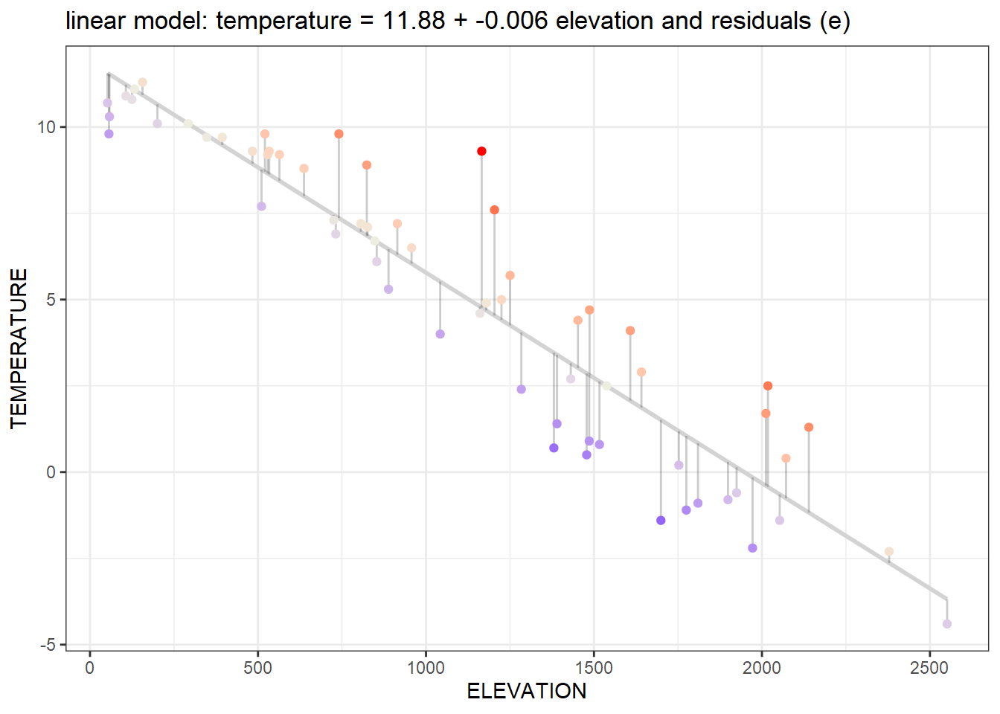
The purpose of a statistical model is to help understand what variables might best predict a phenomenon of interest, which ones have more or less influence, define a predictive equation with coefficients for each of the variables, and then apply that equation to predict values using the same input variables for other areas. This process requires samples with observations of the explanatory (or independent) and response (or dependent) variables in question.
10.1 Some Common Statistical Models
There are many types of statistical models. Variables may be nominal (categorical) or interval/ratio data. You may be interested in predicting a continuous interval/ratio variable from other continuous variables, or predicting the probability of an occurrence (e.g. of a species), or maybe the count of something (also maybe a species). You may be needing to classify your phenomena based on continuous variables. Here are some examples:
lm(y ~ x)linear regression model with one explanatory variablelm(y ~ x1 + x2 + x3)multiple regression, a linear model with multiple explanatory variablesglm(y ~ x, family = poisson)generalized linear model, poisson distribution; see ?family to see those supported, including binomial, gaussian, poisson, etc.glm(y ~ x + y, family = binomial)glm for logistic regressionaov(y ~ x)analysis of variance (same as lm except in the summary)gam(y ~ x)generalized additive modelstree(y ~ x)orrpart(y ~ x)regression/classification trees
10.2 Linear Model (lm)
If we look at the Sierra February climate example, the regression line in the graph above shows the response variable temperature predicted by the explanatory variable elevation. Here’s the code that produced the model and graph:
library(igisci); library(tidyverse)
sierra <- sierraFeb %>%
filter(!is.na(TEMPERATURE))
model1 = lm(TEMPERATURE ~ ELEVATION, data = sierra)
cc = model1$coefficients
sierra$resid = resid(model1)
sierra$predict = predict(model1)
eqn = paste("temperature =",
(round(cc[1], digits=2)), "+",
(round(cc[2], digits=3)), "elevation + e")
ggplot(sierra, aes(x=ELEVATION, y=TEMPERATURE)) +
geom_smooth(method="lm", se=FALSE, color="lightgrey") +
geom_segment(aes(xend=ELEVATION, yend=predict), alpha=.2) +
geom_point(aes(color=resid)) +
scale_color_gradient2(low="blue", mid="ivory2", high="red") +
guides(color="none") +
theme_bw() +
ggtitle(paste("Residuals (e) from model: ",eqn))The summary() function can be used to look at the results statistically:
##
## Call:
## lm(formula = TEMPERATURE ~ ELEVATION, data = sierra)
##
## Residuals:
## Min 1Q Median 3Q Max
## -2.9126 -1.0466 -0.0027 0.7940 4.5327
##
## Coefficients:
## Estimate Std. Error t value Pr(>|t|)
## (Intercept) 11.8813804 0.3825302 31.06 <2e-16 ***
## ELEVATION -0.0061018 0.0002968 -20.56 <2e-16 ***
## ---
## Signif. codes: 0 '***' 0.001 '**' 0.01 '*' 0.05 '.' 0.1 ' ' 1
##
## Residual standard error: 1.533 on 60 degrees of freedom
## Multiple R-squared: 0.8757, Adjusted R-squared: 0.8736
## F-statistic: 422.6 on 1 and 60 DF, p-value: < 2.2e-16Probably the most important statistic is the p value for the coefficient of the explanatory variable ELEVATION, which in this case is very small: \(<2.2\times10^{-16}\).
The graph shows not only the linear prediction line, but also the scatter plot of input points displayed with connecting offsets indicating the magnitude of the residual (error term) of the data point away from the prediction.
Making Predictions
We can use the linear equation and the coefficients derived for the intercept and the explanatory variable (and rounded a bit) to predict temperatures given the explanatory variable elevation, so:
\[ Temperature_{prediction} = 11.88 - 0.006{elevation} \]
So with these coefficients, we can apply the equation to a vector of elevations to predict temperature from those elevations:
b0 <- model1$coefficients[1]
b1 <- model1$coefficients[2]
elevations <- c(500, 1000, 1500, 2000)
elevations## [1] 500 1000 1500 2000## [1] 8.8304692 5.7795580 2.7286468 -0.3222645Next, we’ll plot predictions and residuals on a map.
10.3 Spatial Influences on Statistical Analysis
Spatial statistical analysis brings in the spatial dimension to a statistical analysis, ranging from visual analysis of patterns to specialized spatial statistical methods. There are many applications for these methods in environmental research, since spatial patterns are generally highly relevant. We might ask:
- What patterns can we see?
- What is the effect of scale?
- Relationships among variables – do they vary spatially?
In addition to helping to identify variables not considered in the model, the effect of local conditions and tendency of nearby observations to be related is rich for further exploration. Readers are encouraged to learn more about spatial statistics, and some methods (such as spatial regression models) are explored at https://rspatial.org/terra/analysis/ (Hijmans (n.d.)).
But we’ll use a fairly straightforward method that can help enlighten us about the effect of other variables and the influence of proximity – mapping residuals. Mapping residuals is often enlightening since they can illustrate the influence of other variables. There’s even a recent blog on this: https://californiawaterblog.com/2021/10/17/sometimes-studying-the-variation-is-the-interesting-thing/?fbclid=IwAR1tfnj2SM_du6-jEd9h-AApRPO7w88TiPUbvTFz5dkagpQ1RMV04ZZYAr8.
10.3.1 Mapping residuals
If we start with a map of February temperatures in the Sierra and try to model these as predicted by elevation, we might see the following result. (First we’ll build the model again, though this is probably still in memory.)
library(tidyverse); library(terra); library(igisci); library(sf); library(tmap)
sierra <- st_as_sf(filter(sierraFeb, !is.na(TEMPERATURE)),
coords=c("LONGITUDE", "LATITUDE"), remove=F, crs=4326)
modelElev <- lm(TEMPERATURE ~ ELEVATION, data = sierra)
summary(modelElev)##
## Call:
## lm(formula = TEMPERATURE ~ ELEVATION, data = sierra)
##
## Residuals:
## Min 1Q Median 3Q Max
## -2.9126 -1.0466 -0.0027 0.7940 4.5327
##
## Coefficients:
## Estimate Std. Error t value Pr(>|t|)
## (Intercept) 11.8813804 0.3825302 31.06 <2e-16 ***
## ELEVATION -0.0061018 0.0002968 -20.56 <2e-16 ***
## ---
## Signif. codes: 0 '***' 0.001 '**' 0.01 '*' 0.05 '.' 0.1 ' ' 1
##
## Residual standard error: 1.533 on 60 degrees of freedom
## Multiple R-squared: 0.8757, Adjusted R-squared: 0.8736
## F-statistic: 422.6 on 1 and 60 DF, p-value: < 2.2e-16We can see from the model summary that ELEVATION is significant as a predictor for TEMPERATURE, with a very low P value, and the R-squared value tells us that 87% of the variation in temperature might be “explained” by elevation. We’ll store the residual (resid) and prediction (predict), and set up our mapping environment to create maps of the original data, prediction, and residuals.
cc <- modelElev$coefficients
sierra$resid <- resid(modelElev) # or we could have used mutate
sierra$predict <- predict(modelElev)
eqn = paste("temperature =",
(round(cc[1], digits=2)), "+",
(round(cc[2], digits=3)), "elevation")
ct <- st_read(system.file("extdata","sierra/CA_places.shp",package="igisci"))
ct$AREANAME_pad <- paste0(str_replace_all(ct$AREANAME,'[A-Za-z]',' '),ct$AREANAME)
bounds <- tmaptools::bb(sierra, ext=1.1)
tempScale <- tm_scale_continuous(values="-brewer.rd_bu")The original data and the prediction map
Figure 10.1 shows the original February temperature data, then Figure 10.2 displays the prediction of temperature by elevation at the same weather station locations using the linear model.
tempScale <- tm_scale_continuous(values="-red_blue_diverging")
hillsh <- rast(ex("CA/ca_hillsh_WGS84.tif"))
mapBase <- tm_graticules(lines=F) +
tm_shape(hillsh, bbox=bounds) +
tm_raster(col.scale=tm_scale_continuous(values="-brewer.greys"),
col.legend = tm_legend(show=F),col_alpha=0.7)
mapTop = tm_shape(st_make_valid(CA_counties)) + tm_borders() +
tm_shape(ct) + tm_dots() + tm_text("AREANAME", size=0.5, xmod=1, ymod=1)
mapBase +
tm_shape(sierra) +
tm_symbols(fill="TEMPERATURE",
fill.scale=tempScale, size=0.8,
fill.legend=tm_legend("°C",reverse=T,frame=F)) +
mapTop + tm_title("February Normals")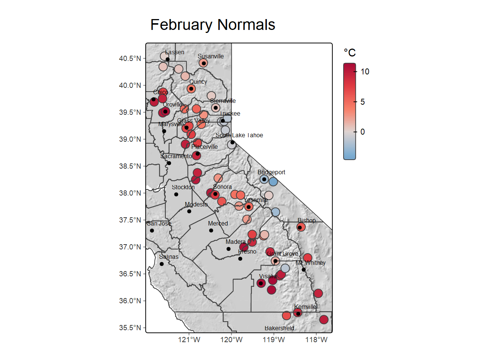
FIGURE 10.1: Original February temperature data
mapBase +
tm_shape(sierra) +
tm_symbols(fill="predict", fill.scale=tempScale, size=0.8,
fill.legend=tm_legend(paste0(eqn,"\n°C"),reverse=T,frame=F)) +
mapTop + tm_title("February Prediction")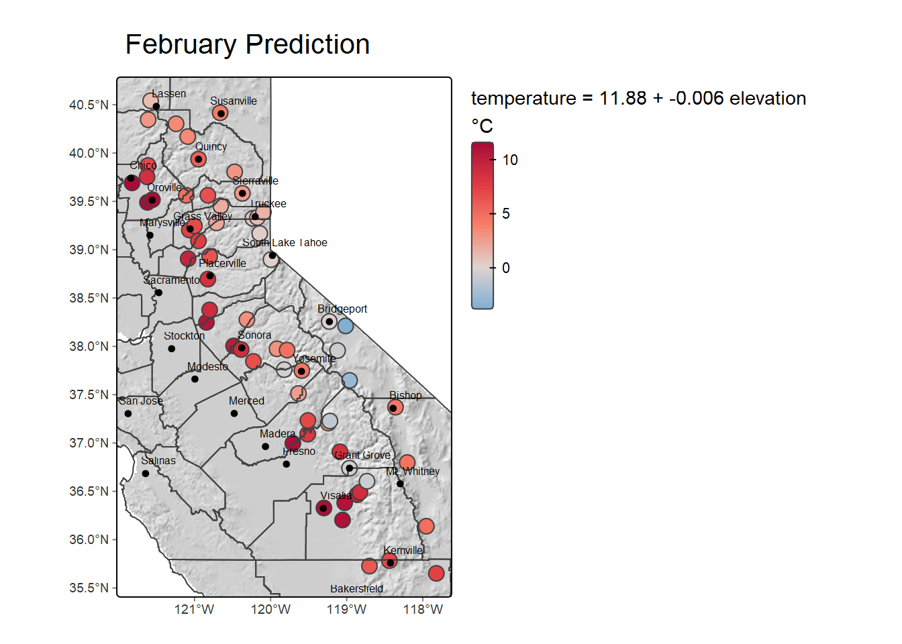
FIGURE 10.2: Temperature predicted by elevation model
We can also use the model to predict temperatures from a raster of elevations, which should match the elevations at the weather stations, allowing us to predict temperature for the rest of the study area. We should have more confidence in the area (the Sierra Nevada and nearby areas) actually sampled by the stations, so we’ll crop with the extent covering that area (though this will include more coastal areas that are likely to differ in February temperatures from patterns observed in the area sampled).
We’ll use GCS elevation raster data and map algebra to derive a prediction raster (Figure 10.3). Note that the coef() function is another way to extract the model coefficients.
elev <- rast(ex("CA/ca_elev_WGS84.tif"))
elevSierra <- crop(elev, ext(-122, -118, 35, 41)) # GCS
b0 <- coef(modelElev)[1]
b1 <- coef(modelElev)[2]
tempSierra <- b0 + b1 * elevSierra
names(tempSierra) = "Predicted\nTemperature"
mapBase +
tm_shape(tempSierra) +
tm_raster(col.scale=tempScale,
col.legend=tm_legend(paste0(eqn,"\n°C"),reverse=T,frame=F)) +
mapTop + tm_title("February Prediction")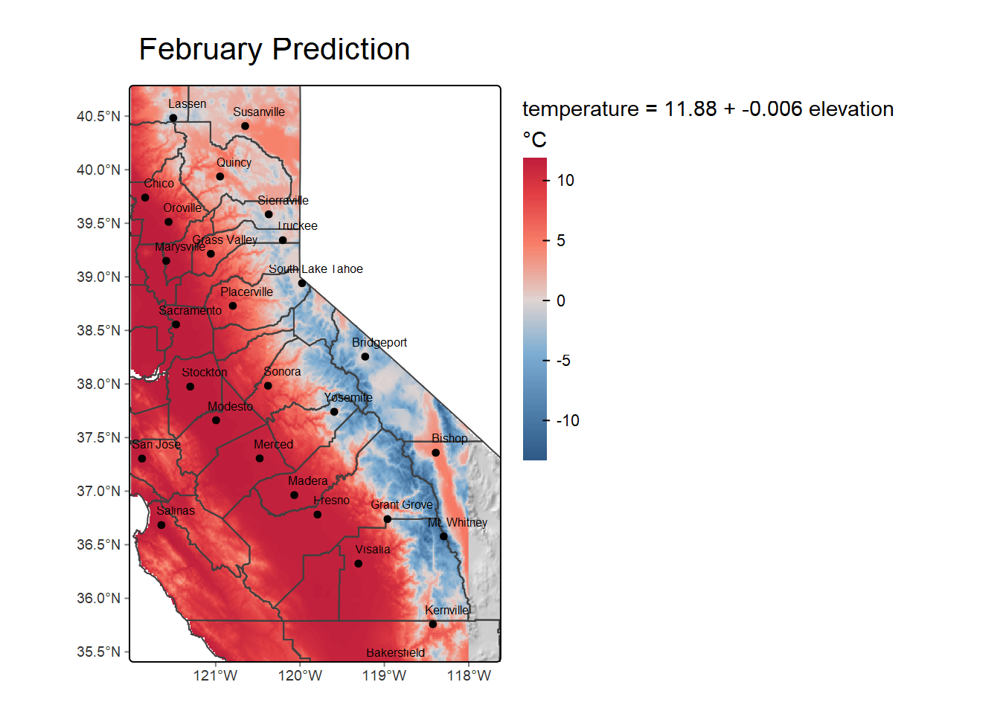
FIGURE 10.3: Temperature predicted by elevation raster
The residuals
To consider patterns where the simple elevation model doesn’t work well, we can map the model residuals at the stations (Figure 10.4).
mapBase +
tm_shape(sierra) +
tm_symbols(fill="resid", fill.scale=tempScale, size=0.8,
fill.legend=tm_legend("°C", reverse=T,frame=F)) +
mapTop + tm_title("February residuals")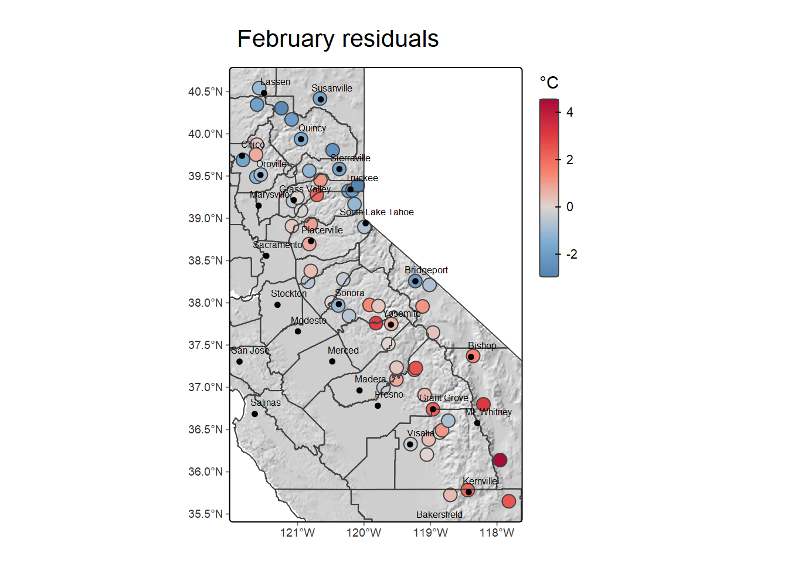
FIGURE 10.4: Residuals of temperature from model predictions by elevation
Statistically, if the residuals from regression are spatially autocorrelated, we should look for patterns in the residuals to find other explanatory variables. However, we can visually see, based upon the pattern of the residuals, that there’s at least one important explanatory variable not included in the model: latitude. We’ll leave that for you to look at in the exercises.
10.4 Analysis of Covariance
Analysis of covariance, or ANCOVA, has the same purpose as ANOVA that we looked at under tests earlier, but also takes into account the influence of other variables called covariates. In this way, analysis of covariance combines a linear model with an analysis of variance.
“Are water samples from streams draining sandstone, limestone, and shale different based on carbonate solutes, while taking into account elevation?”
The response variable is modeled from the factor (ANOVA) plus the covariate (regression):
ANOVA:
TH ~ lithologywhereTHis total hardness, a measure of carbonate solutesRegression:
TH ~ elevationANCOVA:
TH ~ lithology + elevation- Yet shouldn’t involve interaction between
lithology(factor) andelevation(covariate):
- Yet shouldn’t involve interaction between
However, as we’ll see in a bit, this particular problem doesn’t lend itself to ANCOVA because there’s in fact a lot of interaction between lithology and elevation, because the Cumberland Plateau has essentially horizontal geologic structure, so all of the sandstone caprock is at the highest elevation. So we’ll look at a better example.
Example: stream types distinguished by discharge and slope
Before we look at that water chemistry model predicted by lithology while taking elevation into consideration, we’ll look at a clearer example of the use of ANCOVA, distinguishing stream types on the basis of discharge and slope.
Three common river types are meandering (Figure 10.5), braided (Figure 10.6), and anastomosed (Figure 10.7).
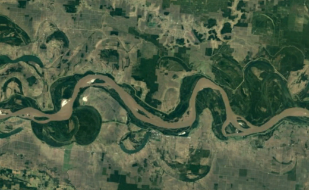
FIGURE 10.5: Meandering river
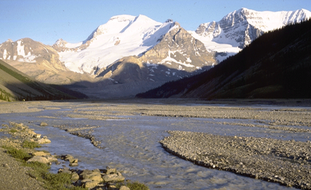
FIGURE 10.6: Braided river
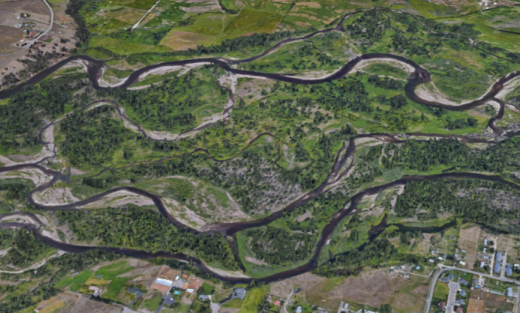
FIGURE 10.7: Anastomosed river
For each, their slope varies by bankfull discharge in a relationship that looks something like Figure 10.8, which employs a log10 scale on both axes:
library(tidyverse)
csvPath <- system.file("extdata","streams.csv", package="igisci")
streams <- read_csv(csvPath)
streams$strtype <- factor(streams$type,
labels=c("Anastomosing","Braided","Meandering"))
library(scales) # needed for the trans_format function below
ggplot(streams, aes(Q, S, color=strtype)) +
geom_point() + geom_smooth(method="lm", se = FALSE) +
scale_x_continuous(trans=log10_trans(),
labels = trans_format("log10", math_format(10^.x))) +
scale_y_continuous(trans=log10_trans(),
labels = trans_format("log10", math_format(10^.x)))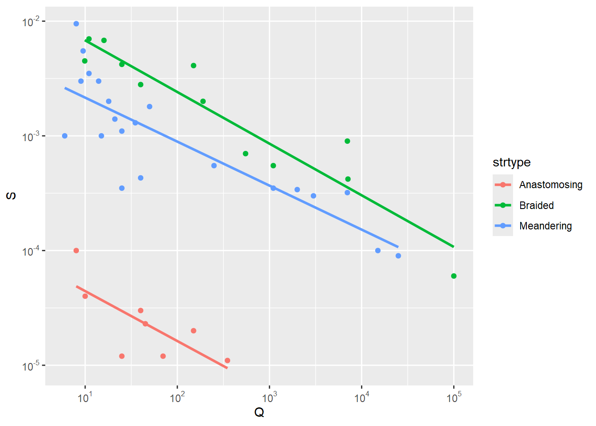
FIGURE 10.8: Q vs S with stream type
One requirement for the ANCOVA model is that there’s no relationship between discharge (covariate) and channel type (factor). Another way of thinking about this is that the slope of the relationship between the covariate and response variable needs to be about the same for each group; only the intercept differs. One good way to understand this is we’re just adjusting the response variable by the group means of the covariate, which results in a simple adjustment the y intercept. The groups have reasonably parallel slopes in the graph, at least for log-transformed data, so that’s looking good. Here are two model definitions in R and what they mean for the analysis:
log10(S) ~ strtype * log10(Q) … interaction between covariate and factor
log10(S) ~ strtype + log10(Q) … no interaction, parallel slopes
In the ANCOVA process, if these models are not significantly different, we can remove the interaction term due to parsimony, and thus satisfy this ANCOVA requirement. So we can go through the process:
## Analysis of Variance Table
##
## Response: log10(S)
## Df Sum Sq Mean Sq F value Pr(>F)
## strtype 2 18.3914 9.1957 130.3650 < 2.2e-16 ***
## log10(Q) 1 8.2658 8.2658 117.1821 1.023e-12 ***
## strtype:log10(Q) 2 0.0511 0.0255 0.3619 0.6989
## Residuals 35 2.4688 0.0705
## ---
## Signif. codes: 0 '***' 0.001 '**' 0.01 '*' 0.05 '.' 0.1 ' ' 1Now an additive model, which does not have that interaction:
## Analysis of Variance Table
##
## Response: log10(S)
## Df Sum Sq Mean Sq F value Pr(>F)
## strtype 2 18.3914 9.1957 135.02 < 2.2e-16 ***
## log10(Q) 1 8.2658 8.2658 121.37 3.07e-13 ***
## Residuals 37 2.5199 0.0681
## ---
## Signif. codes: 0 '***' 0.001 '**' 0.01 '*' 0.05 '.' 0.1 ' ' 1Now see if the two models are significantly different:
## Analysis of Variance Table
##
## Model 1: log10(S) ~ strtype * log10(Q)
## Model 2: log10(S) ~ strtype + log10(Q)
## Res.Df RSS Df Sum of Sq F Pr(>F)
## 1 35 2.4688
## 2 37 2.5199 -2 -0.051051 0.3619 0.6989They’re not significantly different, so simplification is justified and appropriate in the interest of parsimony.
Now we’ll go one step further and remove the strtype term, which is just a simple regression:
## Analysis of Variance Table
##
## Response: log10(S)
## Df Sum Sq Mean Sq F value Pr(>F)
## log10(Q) 1 3.6671 3.6671 5.6063 0.02295 *
## Residuals 39 25.5099 0.6541
## ---
## Signif. codes: 0 '***' 0.001 '**' 0.01 '*' 0.05 '.' 0.1 ' ' 1Is the ANCOVA model significantly different from a simple linear model with no factor?
## Analysis of Variance Table
##
## Model 1: log10(S) ~ strtype + log10(Q)
## Model 2: log10(S) ~ log10(Q)
## Res.Df RSS Df Sum of Sq F Pr(>F)
## 1 37 2.5199
## 2 39 25.5099 -2 -22.99 168.78 < 2.2e-16 ***
## ---
## Signif. codes: 0 '***' 0.001 '**' 0.01 '*' 0.05 '.' 0.1 ' ' 1Since removing the strtype produces a significantly different model, we’ve gone too far, so the strtype groupings mean something; the responses just have different means.
You should have noticed above a surprising use of
anova()to compare two models to see if they’re different. As with other functions in R, it’s always useful to use the help system, so you’ll see with?anovathat it has these two ways of working: as a summary for a single input model, and as a comparison when provided with multiple models.
Alternatively, we can use R’s step method for a more automated approach.
## Start: AIC=-103.2
## log10(S) ~ strtype * log10(Q)
##
## Df Sum of Sq RSS AIC
## - strtype:log10(Q) 2 0.051051 2.5199 -106.36
## <none> 2.4688 -103.20
##
## Step: AIC=-106.36
## log10(S) ~ strtype + log10(Q)
##
## Df Sum of Sq RSS AIC
## <none> 2.5199 -106.364
## - log10(Q) 1 8.2658 10.7857 -48.750
## - strtype 2 22.9901 25.5099 -15.455##
## Call:
## lm(formula = log10(S) ~ strtype + log10(Q), data = streams)
##
## Coefficients:
## (Intercept) strtypeBraided strtypeMeandering log10(Q)
## -3.9583 2.1453 1.7294 -0.4109ANOVA and ANCOVA are applications of a linear model. They use the lm model and the response variable is continuous and assumed normally distributed. The linear model for the stream types employing slope (S) and the covariate discharge (log10Q) was produced using:
mymodel <- lm(log10(S) ~ strtype + log10(Q))
Then as with standard ANOVA, we displayed the results using:
anova(mymodel)
10.4.1 Tukey test for the ANCOVA model
As we did with ANOVA in the last chapter, we can do a bit of post-hoc analysis with TukeyHSD. One minor difference with analysis of covariance is that you need to specify which variable you’re analyzing by using the which parameter to specify the factor strtype. Also, we need to use aov() instead of lm(), even though functionally they’re the same.
mymodel <- aov(log10(S) ~ strtype + log10(Q), data=streams)
TukeyHSD(mymodel, conf.level=.95, which='strtype')## Tukey multiple comparisons of means
## 95% family-wise confidence level
##
## Fit: aov(formula = log10(S) ~ strtype + log10(Q), data = streams)
##
## $strtype
## diff lwr upr p adj
## Braided-Anastomosing 1.8203003 1.5294814 2.111119063 0.0000000
## Meandering-Anastomosing 1.5848655 1.3201451 1.849585955 0.0000000
## Meandering-Braided -0.2354347 -0.4660031 -0.004866321 0.0444972With this, we can be more confident in saying that all of the pairings are significantly distinct.
10.4.2 The karst water chemistry model
We started off this section presenting the question: “Are water samples from streams draining sandstone, limestone, and shale different based on carbonate solutes, while taking into account elevation?” So let’s look at that.
We’ll start by reviewing what we saw with the ANOVA test in the last chapter where we prepared the data to consider whether dissolved carbonates (measured as total hardness (TH)) was predicted by lithology.
library(igisci)
library(sf); library(tidyverse); library(readxl); library(tmap); library(terra)
wChemData <- read_excel(ex("SinkingCove/SinkingCoveWaterChem.xlsx")) %>%
mutate(siteLoc = str_sub(Site,start=1L, end=1L))
wChemTrunk <- wChemData %>% filter(siteLoc == "T") %>% mutate(siteType = "trunk")
wChemDrip <- wChemData %>% filter(siteLoc %in% c("D","S")) %>% mutate(siteType = "dripwater")
wChemTrib <- wChemData %>% filter(siteLoc %in% c("B", "F", "K", "W", "P")) %>%
mutate(siteType = "tributary")
wChemData <- bind_rows(wChemTrunk, wChemDrip, wChemTrib)
wChemData$siteType <- factor(wChemData$siteType)
wChemData$Lithology <- factor(wChemData$Lithology)
sites <- read_csv(ex("SinkingCove/SinkingCoveSites.csv"))
wChem <- wChemData %>%
left_join(sites, by = c("Site" = "site")) %>%
st_as_sf(coords = c("longitude", "latitude"), crs = 4326)Plotting the relationship to see if ANCOVA might work With ANCOVA we’re seeing if a covariate (in this case elevation) plays a role in influencing the effect of lithology on TH. We’re looking for parallel relationships between groups defined by rock types. Do we have that?
library(scales)
ggplot(wChemData, aes(Elevation,TH,col=Lithology)) +
geom_point() + geom_smooth(method="lm", se=F) +
scale_x_continuous(trans=log10_trans(),
labels = trans_format("log10", math_format(10^.x))) +
scale_y_continuous(trans=log10_trans(),
labels = trans_format("log10", math_format(10^.x)))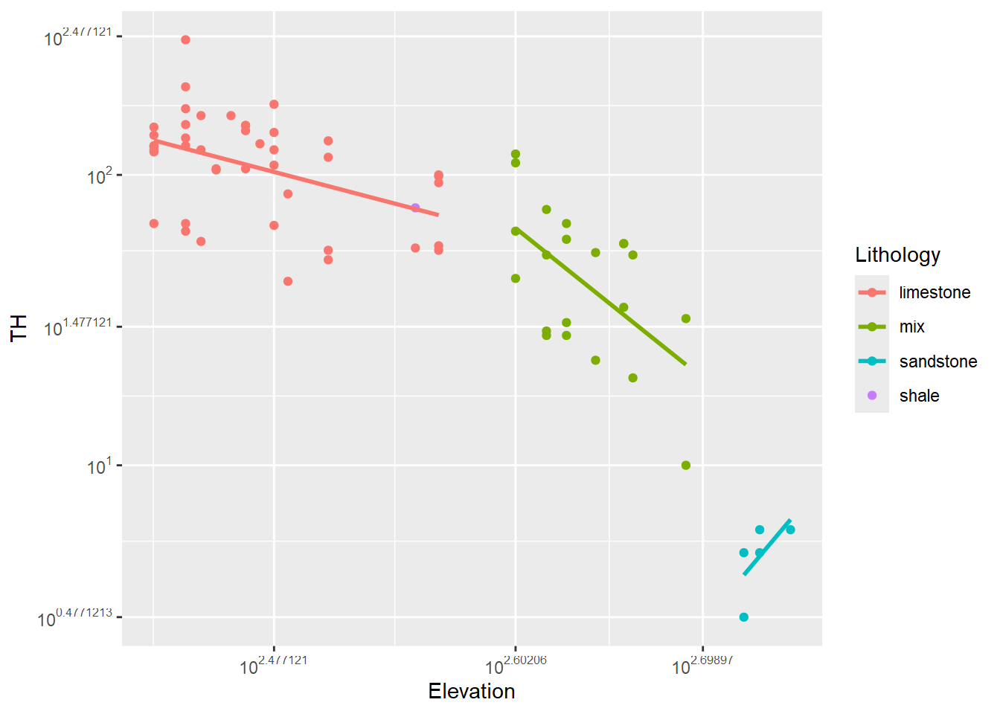
Right off the bat, we see a problem – the samples are at very different elevations. This isn’t surprising since geologic structure is nearly horizontal, with a sandstone caprock of the Cumberland Plateau meaning that any water samples from sandstone are from the maximum elevations. But let’s see what happens with the same ANCOVA process.Starting with the interactive model we’ll call ancova:
##
## Call:
## lm(formula = log10(TH) ~ Lithology * log10(Elevation), data = wChemData)
##
## Residuals:
## Min 1Q Median 3Q Max
## -0.36415 -0.13110 0.01507 0.13443 0.37541
##
## Coefficients: (1 not defined because of singularities)
## Estimate Std. Error t value Pr(>|t|)
## (Intercept) 6.331769 1.467184 4.316 5.73e-05 ***
## Lithologymix 9.361794 4.144554 2.259 0.02736 *
## Lithologysandstone -27.245212 24.972709 -1.091 0.27943
## Lithologyshale 0.003894 0.188754 0.021 0.98361
## log10(Elevation) -1.744617 0.594632 -2.934 0.00466 **
## Lithologymix:log10(Elevation) -3.588442 1.585964 -2.263 0.02712 *
## Lithologysandstone:log10(Elevation) 9.661636 9.156802 1.055 0.29539
## Lithologyshale:log10(Elevation) NA NA NA NA
## ---
## Signif. codes: 0 '***' 0.001 '**' 0.01 '*' 0.05 '.' 0.1 ' ' 1
##
## Residual standard error: 0.1801 on 63 degrees of freedom
## Multiple R-squared: 0.8266, Adjusted R-squared: 0.8101
## F-statistic: 50.06 on 6 and 63 DF, p-value: < 2.2e-16## Analysis of Variance Table
##
## Response: log10(TH)
## Df Sum Sq Mean Sq F value Pr(>F)
## Lithology 3 9.0084 3.00281 92.6167 < 2.2e-16 ***
## log10(Elevation) 1 0.5240 0.52403 16.1630 0.0001579 ***
## Lithology:log10(Elevation) 2 0.2060 0.10298 3.1764 0.0484967 *
## Residuals 63 2.0426 0.03242
## ---
## Signif. codes: 0 '***' 0.001 '**' 0.01 '*' 0.05 '.' 0.1 ' ' 1Now an additive model, which does not have that interaction:
## Analysis of Variance Table
##
## Response: log10(TH)
## Df Sum Sq Mean Sq F value Pr(>F)
## Lithology 3 9.0084 3.00281 86.804 < 2.2e-16 ***
## log10(Elevation) 1 0.5240 0.52403 15.149 0.0002367 ***
## Residuals 65 2.2485 0.03459
## ---
## Signif. codes: 0 '***' 0.001 '**' 0.01 '*' 0.05 '.' 0.1 ' ' 1## Analysis of Variance Table
##
## Model 1: log10(TH) ~ Lithology * log10(Elevation)
## Model 2: log10(TH) ~ Lithology + log10(Elevation)
## Res.Df RSS Df Sum of Sq F Pr(>F)
## 1 63 2.0426
## 2 65 2.2485 -2 -0.20597 3.1764 0.0485 *
## ---
## Signif. codes: 0 '***' 0.001 '**' 0.01 '*' 0.05 '.' 0.1 ' ' 1The fairly low (less than 0.05) p value means the models are significantly different, so we need to stick with the interaction model. Elevation interacts with lithology due to the horizontal structure. A stepwise approach shows the same thing:
## Start: AIC=-233.4
## log10(TH) ~ Lithology * log10(Elevation)
##
## Df Sum of Sq RSS AIC
## <none> 2.0426 -233.40
## - Lithology:log10(Elevation) 2 0.20597 2.2485 -230.68##
## Call:
## lm(formula = log10(TH) ~ Lithology * log10(Elevation), data = wChemData)
##
## Coefficients:
## (Intercept) Lithologymix
## 6.331769 9.361794
## Lithologysandstone Lithologyshale
## -27.245212 0.003894
## log10(Elevation) Lithologymix:log10(Elevation)
## -1.744617 -3.588442
## Lithologysandstone:log10(Elevation) Lithologyshale:log10(Elevation)
## 9.661636 NASo this isn’t something we can apply ANCOVA to, but it’s not surprising.
10.5 Generalized linear model (GLM)
The glm in R allows you to work with various types of data using various distributions, described as families such as:
gaussian: normal distribution – what is used with lmbinomial: logit – used with probabilities- used for logistic regression
poisson: for counts – commonly used for species counts
See help(glm) for other examples
10.5.1 Binomial family: Logistic GLM
We’ll look at a couple of examples from data we’ve used before: Eucs vs oaks and stream types.
In both cases, we’ll create dummy variables to handle categorical variables as continuous. Dummy variables simply have the value 1 or 0 representing whether a particular category is true or false, e.g. is the sample from a Eucalyptus grove or not. This is frequently used in linear modeling for predictor variables, but we’re going to use them for a response variable. With the binomial glm family, this is called logistic regression, where we’re predicting the probability of something being true, though our input response data only has 0% or 100% values.
In the case of eucs vs. oaks, we only have two categories, so choosing either one works the same – if the sample is euc, it’s not oak, and vice-versa. We’ll create a variable euc to represent whether it’s Eucalyptus or not.
eucoak <- tidy_eucoak |>
mutate(euc = (tree=="euc")*1)
runoff_model <- glm(euc ~ rain_subcanopy + slope + aspect +
surface_tension + runoff_L + runoff_rainfall_ratio,
family=binomial,
data=eucoak)
summary(runoff_model)##
## Call:
## glm(formula = euc ~ rain_subcanopy + slope + aspect + surface_tension +
## runoff_L + runoff_rainfall_ratio, family = binomial, data = eucoak)
##
## Coefficients:
## Estimate Std. Error z value Pr(>|z|)
## (Intercept) 6.656e+00 1.730e+00 3.848 0.000119 ***
## rain_subcanopy 3.165e-03 1.387e-02 0.228 0.819491
## slope -2.546e-02 3.269e-02 -0.779 0.436059
## aspect -5.799e-06 4.888e-03 -0.001 0.999053
## surface_tension -1.108e-01 1.754e-02 -6.316 2.68e-10 ***
## runoff_L 1.181e-01 1.892e-01 0.624 0.532520
## runoff_rainfall_ratio -2.158e+00 7.212e+00 -0.299 0.764756
## ---
## Signif. codes: 0 '***' 0.001 '**' 0.01 '*' 0.05 '.' 0.1 ' ' 1
##
## (Dispersion parameter for binomial family taken to be 1)
##
## Null deviance: 182.96 on 131 degrees of freedom
## Residual deviance: 105.90 on 125 degrees of freedom
## (48 observations deleted due to missingness)
## AIC: 119.9
##
## Number of Fisher Scoring iterations: 5So what we can see from this is that only surface_tension is significant in predicting whether samples are from Eucalyptus groves.
A simple example of predicting a dog panting or not (a binomial, since the dog either panted or didn’t) related to temperature can be found at: https://bscheng.com/2016/10/23/logistic-regression-in-r/
For stream types, we have three types – meandering, braided, and anastomosed – so we’ll end up doing three separate logistic GLMs . Earlier, we used analysis of covariance with this data, and that’s probably the most useful approach, but let’s just use logistic regression to look at the probability of a particular stream type from slope and discharge:
library(igisci)
library(tidyverse)
streams <- read_csv(ex("streams.csv"))
streams$strtype <- factor(streams$type,
labels=c("Anastomosing","Braided","Meandering"))For logistic regression, we need probability data, so locations where we know the probability of something being true. If you think about it, that’s pretty difficult to know for an observation, but we might know whether something is true or not, like we observed the phenomenon or not, and so we just assign a probability of 1 if something is observed, and 0 if it’s not. Since in the case of the stream types, we really have three different probabilities: whether it’s true that the stream is anastomosing, whether it’s braided, and whether it’s meandering, so we’ll create three dummy variables for that with values of 1 or 0: if it’s braided, the value for braided is 1, otherwise it’s 0; the same applies to all three dummy variables:
streams <- streams %>%
mutate(braided = ifelse(type == "B", 1, 0),
meandering = ifelse(type == "M", 1, 0),
anastomosed = ifelse(type == "A", 1, 0))
streams## # A tibble: 41 × 7
## type Q S strtype braided meandering anastomosed
## <chr> <dbl> <dbl> <fct> <dbl> <dbl> <dbl>
## 1 B 9.9 0.0045 Braided 1 0 0
## 2 B 11 0.007 Braided 1 0 0
## 3 B 16 0.0068 Braided 1 0 0
## 4 B 25 0.0042 Braided 1 0 0
## 5 B 40 0.0028 Braided 1 0 0
## 6 B 150 0.0041 Braided 1 0 0
## 7 B 190 0.002 Braided 1 0 0
## 8 B 550 0.0007 Braided 1 0 0
## 9 B 1100 0.00055 Braided 1 0 0
## 10 B 7100 0.00042 Braided 1 0 0
## # ℹ 31 more rowsThen we can run the logistic regression on each one:
##
## Call:
## glm(formula = braided ~ log(Q) + log(S), family = binomial, data = streams)
##
## Coefficients:
## Estimate Std. Error z value Pr(>|z|)
## (Intercept) 17.5853 6.7443 2.607 0.00912 **
## log(Q) 2.0940 0.8135 2.574 0.01005 *
## log(S) 4.3115 1.6173 2.666 0.00768 **
## ---
## Signif. codes: 0 '***' 0.001 '**' 0.01 '*' 0.05 '.' 0.1 ' ' 1
##
## (Dispersion parameter for binomial family taken to be 1)
##
## Null deviance: 49.572 on 40 degrees of freedom
## Residual deviance: 23.484 on 38 degrees of freedom
## AIC: 29.484
##
## Number of Fisher Scoring iterations: 8##
## Call:
## glm(formula = meandering ~ log(Q) + log(S), family = binomial,
## data = streams)
##
## Coefficients:
## Estimate Std. Error z value Pr(>|z|)
## (Intercept) 2.43255 1.38078 1.762 0.0781 .
## log(Q) 0.04984 0.13415 0.372 0.7103
## log(S) 0.34750 0.19471 1.785 0.0743 .
## ---
## Signif. codes: 0 '***' 0.001 '**' 0.01 '*' 0.05 '.' 0.1 ' ' 1
##
## (Dispersion parameter for binomial family taken to be 1)
##
## Null deviance: 56.814 on 40 degrees of freedom
## Residual deviance: 53.074 on 38 degrees of freedom
## AIC: 59.074
##
## Number of Fisher Scoring iterations: 4##
## Call:
## glm(formula = anastomosed ~ log(Q) + log(S), family = binomial,
## data = streams)
##
## Coefficients:
## Estimate Std. Error z value Pr(>|z|)
## (Intercept) -176.09 786410.69 0 1
## log(Q) -11.81 77224.35 0 1
## log(S) -24.18 70417.40 0 1
##
## (Dispersion parameter for binomial family taken to be 1)
##
## Null deviance: 4.0472e+01 on 40 degrees of freedom
## Residual deviance: 1.3027e-09 on 38 degrees of freedom
## AIC: 6
##
## Number of Fisher Scoring iterations: 25So what we can see from this admittedly small sample is that:
- Predicting braided character from Q and S works pretty well, distinguishing these characteristics from the characteristics of all other streams (
braided==0). - Predicting anastomosed or meandering, however, isn’t significant.
We really need a larger sample size, and North American geomorphology has recently discovered the “anabranching” stream type (of which anastomosed is a type) that has long been recognized in Australia, and its characteristics range across meandering at least, so muddying the waters…
10.5.2 Logistic landslide model
With its active tectonics, steep slopes and relatively common intense rain events during the winter season, coastal California has a propensity for landslides. Pacifica has been the focus of many landslide studies by the USGS and others, with events ranging from coastal erosion influenced by wave action to landslides (Figure 10.9) and debris flows on steep hillslopes driven by positive pore pressure (Ellen and Wieczorek (1988)).
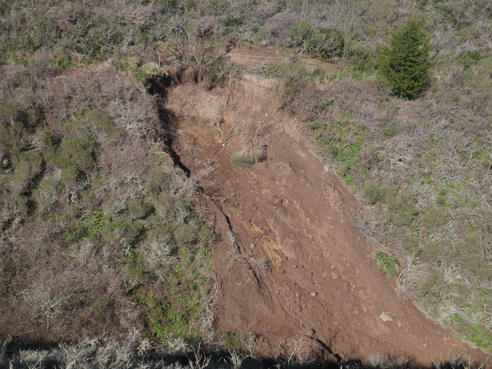
FIGURE 10.9: Landslide in San Pedro Creek watershed
Also see the relevant section in the San Pedro Creek Virtual Fieldtrip story map: Davis (n.d.).
Landslides detected in San Pedro Creek Watershed in Pacifica, CA, are in the SanPedro folder of extdata. Landslides were detected on aerial photography from 1941, 1955, 1975, 1983, and 1997 (Figure 10.10), and confirmed in the field during a study in the early 2000s (Sims (2004), Davis and Blesius (2015)) (Figure 10.11).
library(igisci); library(sf); library(tidyverse); library(terra)
slides <- st_read(ex("SanPedro/slideCentroids.shp")) %>%
mutate(IsSlide = 1)
slides$Visible <- factor(slides$Visible)
trails <- st_read(ex("SanPedro/trails.shp"))
streams <- st_read(ex("SanPedro/streams.shp"))
wshed <- st_read(ex("SanPedro/SPCWatershed.shp"))ggplot(data=slides) + geom_sf(aes(col=Visible)) +
scale_color_brewer(palette="Spectral") +
geom_sf(data=streams, col="blue") +
geom_sf(data=wshed, fill=NA)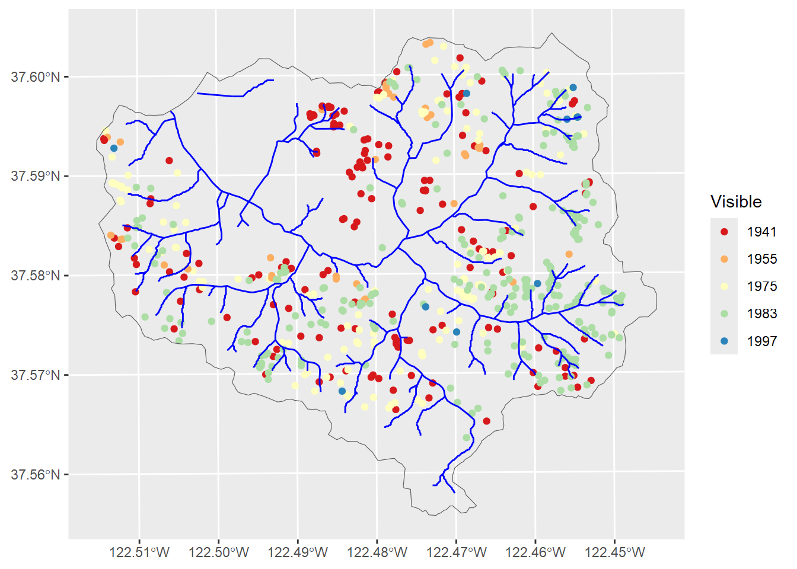
FIGURE 10.10: Landslides in San Pedro Creek watershed
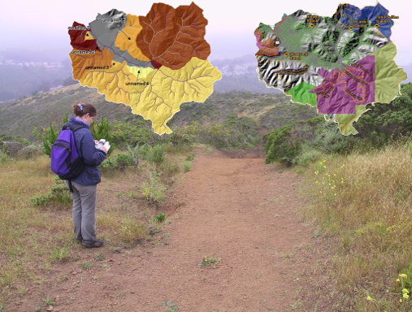
FIGURE 10.11: Sediment source analysis
We’ll create a logistic regression to compare landslide probability to various environmental factors. We’ll use elevation, slope, and other derivatives, distance to streams, distance to trails, and the results of a physical model predicting slope stability as a stability index (SI), using slope and soil transmissivity data.
At this point, we have data for occurrences of landslides, and so for each point we assign the dummy variable IsSlide = 1. We don’t have any absence data, but we can create some using random points and assign them IsSlide = 0. It would probably be a good idea to avoid areas very close to the occurrences, but we’ll just put random points everywhere and just remove the ones that don’t have SI data.
For the random 9.2.3 locations (Figure 10.12), we’ll set a seed so for the book the results will stay the same; and if we’re good with that since it doesn’t really matter what seed we use, we might as well use the answer to everything: 42.
library(terra)
elev <- rast(ex("SanPedro/dem.tif"))
SI <- rast(ex("SanPedro/SI.tif"))
npts <- length(slides$Visible) * 2 # up it a little to get enough after clip
set.seed(42)
x <- runif(npts, min=xmin(elev), max=xmax(elev))
y <- runif(npts, min=ymin(elev), max=ymax(elev))
rsampsRaw <- st_as_sf(data.frame(x,y), coords = c("x","y"), crs=crs(elev))
ggplot(data=rsampsRaw) + geom_sf(size=0.5) +
geom_sf(data=streams, col="blue") +
geom_sf(data=wshed, fill=NA)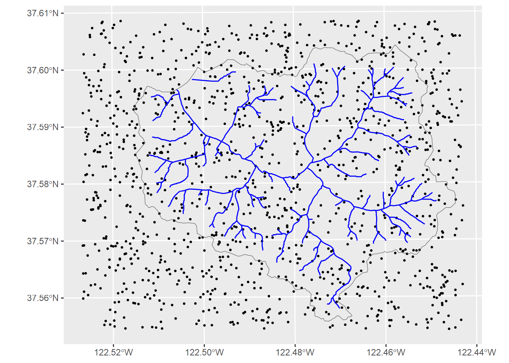
FIGURE 10.12: Raw random points
Now we have twice as many random points as we have landslides, within the rectangular extend of the watershed, as defined by the elevation raster. We doubled these because we need to exclude some points, yet still have enough to be roughly as many random points as slides. We’ll exclude:
- all points outside the watershed
- points within 100 m of the landslide occurrences, the distance based on knowledge of the grain of landscape features (like spurs and swales) that might influence landslide occurrence
First, we’ll just see what st_difference() returns:
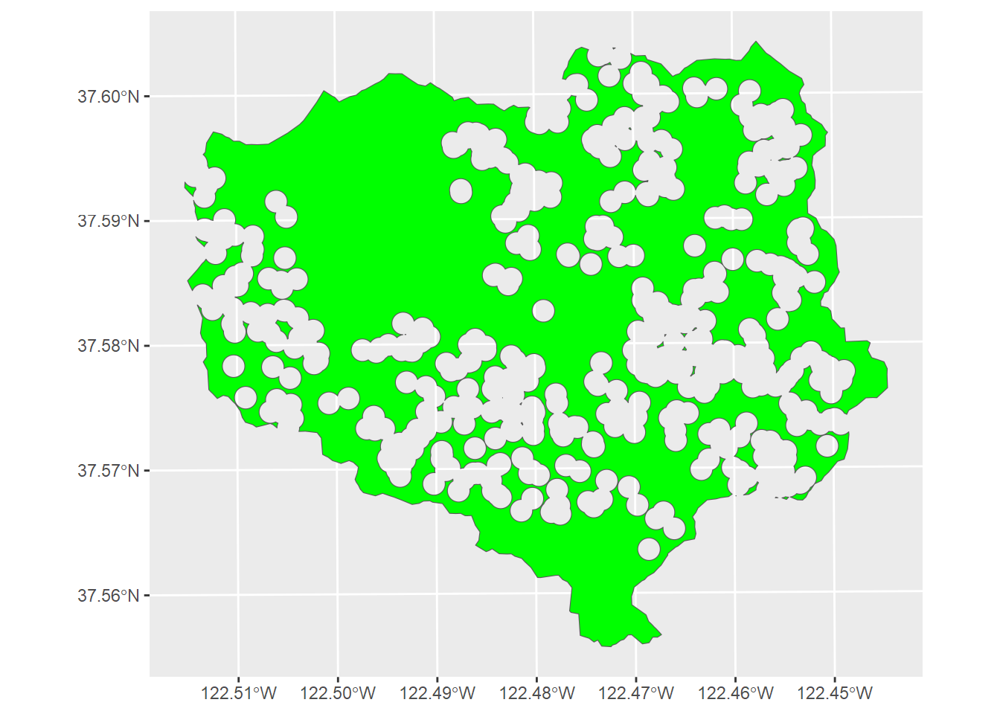
The 100 m buffer excludes all areas around all landslides in the data set (Figure 10.13). We’re going to run the model on specific years, but the best selection of landslide absences will be to exclude areas around all landslides we know of (Figure 10.14).
ggplot(data=slides) + geom_sf(aes(col=Visible)) +
scale_color_brewer(palette="Spectral") +
geom_sf(data=streams, col="blue") +
geom_sf(data=wshedNoSlide, fill=NA)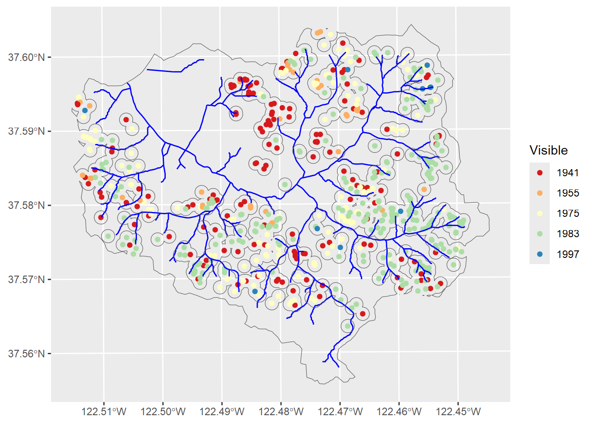
FIGURE 10.13: Landslides and buffers to exclude from random points
rsamps <- st_intersection(rsampsRaw,wshedNoSlide) %>%
mutate(IsSlide = 0)
allPts <- bind_rows(slides, rsamps)ggplot(data=allPts) + geom_sf(aes(col=IsSlide)) +
geom_sf(data=streams, col="blue") +
geom_sf(data=wshed, fill=NA)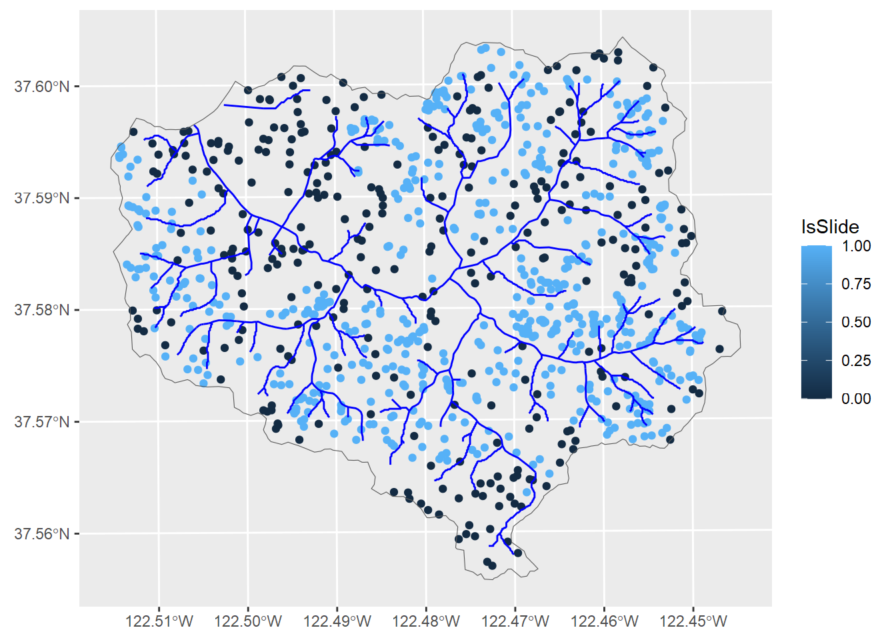
FIGURE 10.14: Landslides and random points (excluded from slide buffers)
Now we’ll derive some environmental variables as rasters and extract their values to the slide/noslide point data set. We’ll use the shade function to create a hillshade raster with the sun at the average noon angle from the south.
slidesV <- vect(allPts)
strms <- rasterize(vect(streams),elev)
tr <- rasterize(vect(trails),elev)
stD <- terra::distance(strms); names(stD) = "stD"
trD <- terra::distance(tr); names(trD) = "trD"
slope <- terrain(elev, v="slope")
curv <- terrain(slope, v="slope")
aspect <- terrain(elev, v="aspect")
hillshade <- shade(slope/180*pi,aspect/180*pi,angle=53,direction=180)
elev_ex <- terra::extract(elev, slidesV) %>%
rename(elev=dem) %>% dplyr::select(-ID)
SI_ex <- terra::extract(SI, slidesV) %>% dplyr::select(-ID)
slope_ex <- terra::extract(slope, slidesV) %>% dplyr::select(-ID)
curv_ex <- terra::extract(curv, slidesV) %>%
rename(curv = slope) %>% dplyr::select(-ID)
hillshade_ex <- terra::extract(hillshade, slidesV) %>%
dplyr::select(-ID)
stD_ex <- terra::extract(stD, slidesV) %>% dplyr::select(-ID)
trD_ex <- terra::extract(trD, slidesV) %>% dplyr::select(-ID)
slidePts <- cbind(allPts,elev_ex,SI_ex,slope_ex,curv_ex,hillshade_ex,stD_ex,trD_ex)
slidesData <- as.data.frame(slidePts) %>%
filter(!is.nan(SI)) %>% st_as_sf(crs=st_crs(slides))We’ll filter for just the slides in the 1983 imagery, and for the model also include all of the random points (detected with NA values for Visible):
slides83 <- slidesData %>% filter(Visible == 1983)
slides83plusr <- slidesData %>% filter(Visible == 1983 | is.na(Visible))The logistic regression in the glm model uses the binomial family:
summary(glm(IsSlide ~ SI + curv + elev + slope + hillshade + stD + trD,
family=binomial, data=slides83plusr))##
## Call:
## glm(formula = IsSlide ~ SI + curv + elev + slope + hillshade +
## stD + trD, family = binomial, data = slides83plusr)
##
## Coefficients:
## Estimate Std. Error z value Pr(>|z|)
## (Intercept) 0.1428138 1.0618829 0.134 0.89301
## SI -1.8191092 0.3639254 -4.999 5.78e-07 ***
## curv 0.0059240 0.0113658 0.521 0.60222
## elev -0.0025053 0.0014399 -1.740 0.08187 .
## slope 0.0623188 0.0211011 2.953 0.00314 **
## hillshade 2.6972342 0.6603871 4.084 4.42e-05 ***
## stD -0.0052633 0.0019765 -2.663 0.00775 **
## trD -0.0020734 0.0006532 -3.174 0.00150 **
## ---
## Signif. codes: 0 '***' 0.001 '**' 0.01 '*' 0.05 '.' 0.1 ' ' 1
##
## (Dispersion parameter for binomial family taken to be 1)
##
## Null deviance: 668.29 on 483 degrees of freedom
## Residual deviance: 402.90 on 476 degrees of freedom
## (85 observations deleted due to missingness)
## AIC: 418.9
##
## Number of Fisher Scoring iterations: 8So while we might want to make sure that we’ve picked the right variables, some conclusions from this might be that stability index (SI) is not surprisingly a strong predictor of landslides, but also that other than elevation and curvature, the other variables are also significant.
10.5.2.1 Map the logistic result
We should be able to map the results; we just need to use the formula for the model, which in our case will have six explanatory variables SI (\(X_1\)), elev (\(X_2\)), slope (\(X_3\)), hillshade (\(X_4\)), stD (\(X_5\)), and trD (\(X_6\)): \[p = \frac{e^{b_0+b_1X_1+b_2X_2+b_3X_3+b_4X_4+b_5X_5}}{1+e^{b_0+b_1X_1+b_2X_2+b_3X_3+b_4X_4+b_5X_5}}\]
Then we retrieve the coefficients with coef() and use map algebra to create the prediction map, including dots for the landslides actually observed in 1983 (Figure 10.15).
library(tmap)
SI_stD_model <- glm(IsSlide ~ SI + slope + hillshade + stD + trD, family=binomial,
data=slides83plusr)
b0 <- coef(SI_stD_model)[1]
b1 <- coef(SI_stD_model)[2]
b2 <- coef(SI_stD_model)[3]
b3 <- coef(SI_stD_model)[4]
b4 <- coef(SI_stD_model)[5]
b5 <- coef(SI_stD_model)[6]
predictionMap <- (exp(b0+b1*SI+b2*slope+b3*hillshade+b4*stD+b5*trD))/
(1 + exp(b0+b1*SI+b2*slope+b3*hillshade+b4*stD+b5*trD))
names(predictionMap) <- "probability\n1983"
tm_shape(predictionMap) +
tm_raster(col.scale=tm_scale_continuous(values="carto.peach")) +
tm_shape(streams) + tm_lines(col="blue") +
tm_shape(wshed) + tm_borders(col="black") +
tm_shape(slides83) +
tm_dots(fill="purple", size=0.25,
size.legend=tm_legend("1983 slides",frame=F)) +
tm_title("Landslides predicted by\nSI, slope, hillshade, streamD, trailD") +
tm_graticules(lines=F)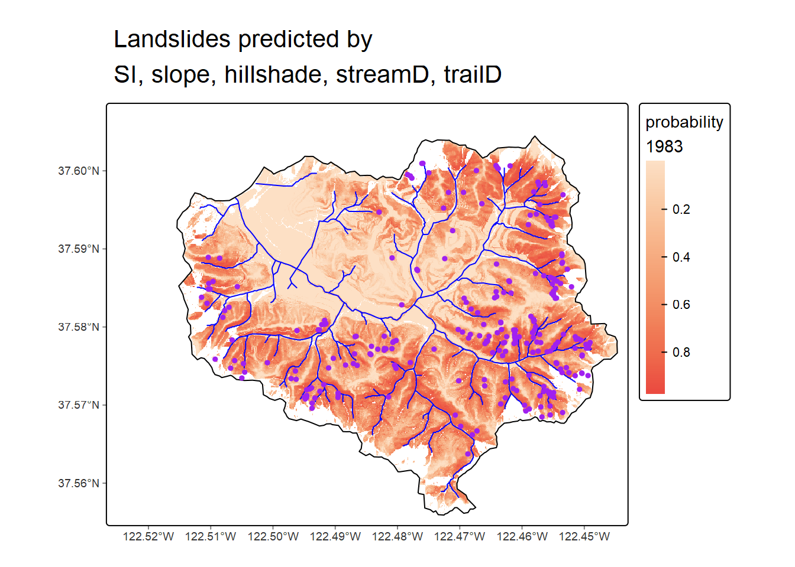
FIGURE 10.15: Logistic model prediction of 1983 landslide probability
10.5.3 Poisson regression
Poission regression (family = poisson in glm) is for analyzing counts. You might use this to determine which variables are significant predictors, or you might want to see where or when counts are particularly high, or higher than expected. Or it might be applied to compare groupings. For example, if instead of looking at differences among rock types in Sinking Cove based on chemical properties in water samples or measurements (where we applied ANOVA), we looked at differences in fish counts, that might be an application of poisson regression, as long as other data assumptions hold.
10.5.3.1 Seabird Poisson Model
This model is further developed in a separate case study where we’ll map a prediction, but we’ll look at the basics for applying a poisson family model in glm: seabird observations. The data is potentially suitable since its counts with known time intervals of observation effort and initial review of the data suggests that the mean of counts is reasonably similar to the variance. The data was collected through the ACCESS program (Applied California Current Ecosystem Studies (n.d.)) and a thorough analysis is provided by Studwell et al. (2017).
library(igisci); library(sf); library(tidyverse); library(tmap)
library(maptiles)
transects <- st_read(ex("SFmarine/transects.shp"))One of the seabirds studies, the black-footed albatross, has the lowest counts (so a relatively rare bird), and studies of its distribution may be informative. We’ll look at counts collected during transect cruises in July 2006 (Figure 10.16).
tmap_mode("plot")
transJul2006 <- transects %>%
filter(month==7 & year==2006 & avg_tem>0 & avg_sal>0 & avg_fluo>0)
tm_basemap("Esri.NatGeoWorldMap") +
tm_shape(transJul2006) + tm_symbols(fill="bfal", size="bfal",
fill.scale=tm_scale_continuous(values="Greens"))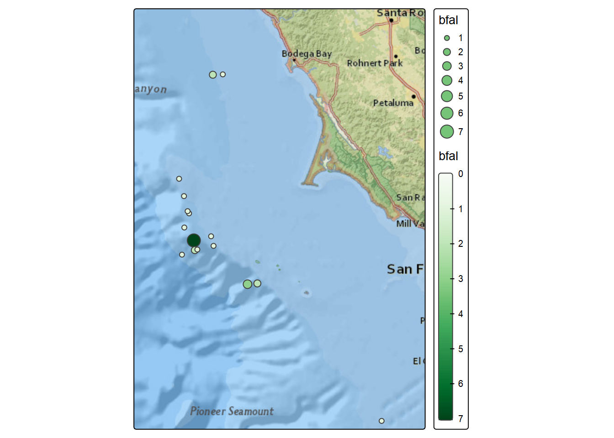
FIGURE 10.16: Black-footed albatross counts, July 2006
Prior studies have suggested that temperature, salinity, fluorescence, depth, and various distances might be good explanatory variables to use to look at spatial patterns, so we’ll use these in the model.
summary(glm(bfal~avg_tem + avg_sal + avg_fluo + avg_dep +
dist_land + dist_isla + dist_200m + dist_cord,
data=transJul2006, family=poisson))##
## Call:
## glm(formula = bfal ~ avg_tem + avg_sal + avg_fluo + avg_dep +
## dist_land + dist_isla + dist_200m + dist_cord, family = poisson,
## data = transJul2006)
##
## Coefficients:
## Estimate Std. Error z value Pr(>|z|)
## (Intercept) -1.754e+02 7.032e+01 -2.495 0.01260 *
## avg_tem 7.341e-01 3.479e-01 2.110 0.03482 *
## avg_sal 5.202e+00 2.097e+00 2.480 0.01312 *
## avg_fluo -6.978e-01 1.217e+00 -0.574 0.56626
## avg_dep -3.561e-03 8.229e-04 -4.328 1.51e-05 ***
## dist_land -2.197e-04 6.194e-05 -3.547 0.00039 ***
## dist_isla 1.372e-05 1.778e-05 0.771 0.44043
## dist_200m -4.696e-04 1.037e-04 -4.528 5.95e-06 ***
## dist_cord -5.213e-06 1.830e-05 -0.285 0.77570
## ---
## Signif. codes: 0 '***' 0.001 '**' 0.01 '*' 0.05 '.' 0.1 ' ' 1
##
## (Dispersion parameter for poisson family taken to be 1)
##
## Null deviance: 152.14 on 206 degrees of freedom
## Residual deviance: 105.73 on 198 degrees of freedom
## AIC: 160.37
##
## Number of Fisher Scoring iterations: 7We can see in the model coefficients table several predictive variables that appear to be significant, which we’ll want to explore further, and also map the results as we did with Sierra temperature data.
- avg_tem
- avg_sal
- avg_dep
- dist_land
- dist_200m
Note R will allow you to run glm on any family, but it’s up to you to make sure it’s appropriate. For example, if you provide a response variable that is not count data or doesn’t fit the requirements for a poisson model, R will create a result but it’s bogus.
10.6 Other modeling methods
10.6.1 Curve fitting
In general, what we’re doing with linear models and other approaches can be considered curve fitting, and we’ve seen how we can manipulate our data by modeling with transformed data, at least log-transformed, then applied to a linear model using lm. We’ve also looked a bit at generalized linear models with glm, but there are other methods such as:
poly– for polynomialsnls– for nonlinear models
In the addenda to this book, the Curve Fitting chapter explores a bit of polynomial models and nonlinear models, and you might want to have a look:
https://bookdown.org/igisc/EnvDataSciAddenda/curve-fitting.html
10.6.2 Models employing machine learning
Models using machine learning algorithms are commonly used in data science, fitting with its general exploratory and data-mining approach. There are many machine learning algorithms, and many resources for learning more about them, but they all share a basically black-box approach where a collection of variables are explored for patterns in input variables that help to explain a response variable. The latter is similar to more conventional statistical modeling describe above, with the difference being the machine learning approach – think of robots going through your data looking for connections.
We’ll explore machine learning methods in the next chapter when we attempt to use them to classify satellite imagery, an important environmental application.
10.7 Exercises: Modeling
Exercise 10.1 Add LATITUDE as a second independent variable after ELEVATION in the model predicting February temperatures. (You may need to see 7.1 for how to retain LATITUDE and LONGITUDE as variables, using remove=F) Then you’ll need to change the regression formula to include both ELEVATION + LATITUDE. First derive and display the model summary results, and then answer the questions – is the explanation better based on the \(r^2\)?
Exercise 10.2 Now map the predictions and residuals.
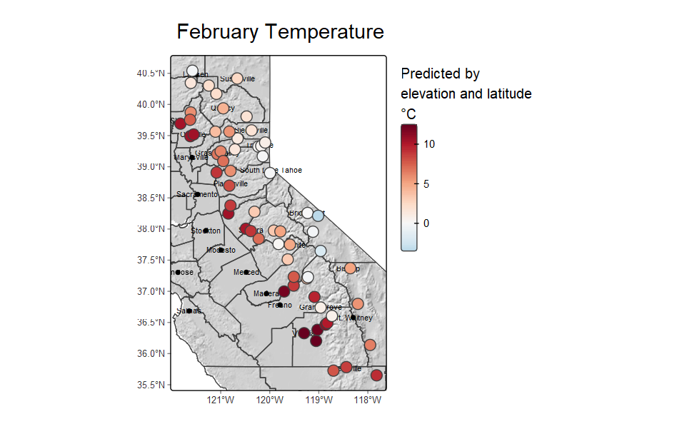
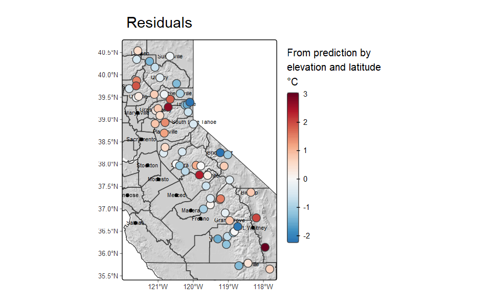
Exercise 10.3 Can you see any potential for additional variables? What evidence might there be for local effects like topographically related microclimatology?
Exercise 10.4 Next we’ll build and display a prediction raster from the above model, but we’ll start by deriving the coefficients – b0, b1, and b2 – that we’ll need for the map algebra in the next step.
Exercise 10.5 To create the prediction raster we’ll need a latitude raster. Use the following code to create a raster of the same dimensions as elevSierra, but with latitude assigned as z values to the cells. Then build and display a raster prediction of temperature from the model and the two explanatory rasters.
lats <- yFromCell(elevSierra, 1:ncell(elevSierra))
latitude <- setValues(elevSierra,lats)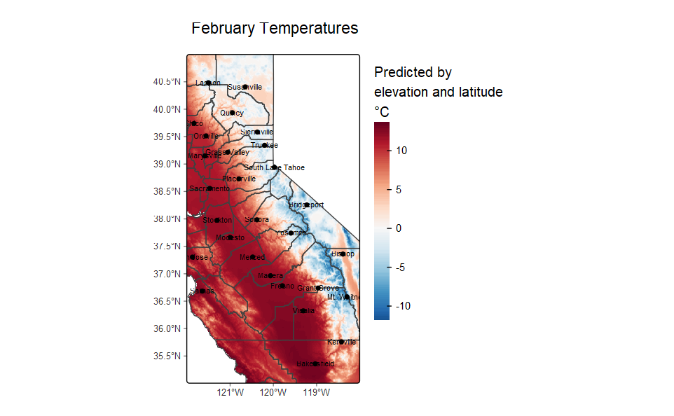
Exercise 10.6 Modify the code for the San Pedro Creek Watershed logistical model (10.5.2) to analyze 1975 landslides. Are the conclusions different?
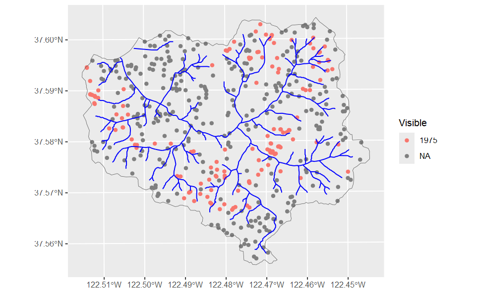
Exercise 10.7 Optionally, using your own data that should have location information as well as other attributes, create a statistical model of your choice, and provide your assessment of the results, a prediction map, and where appropriate mapped residuals. You’ll probably want to create a new project for this with a data folder.
Exercise 10.8 Optionally, using your own data but with no location data needed, create a glm binomial model. If you don’t have anything obvious, consider doing something like the study of a pet dog panting based on temperature. https://bscheng.com/2016/10/23/logistic-regression-in-r/